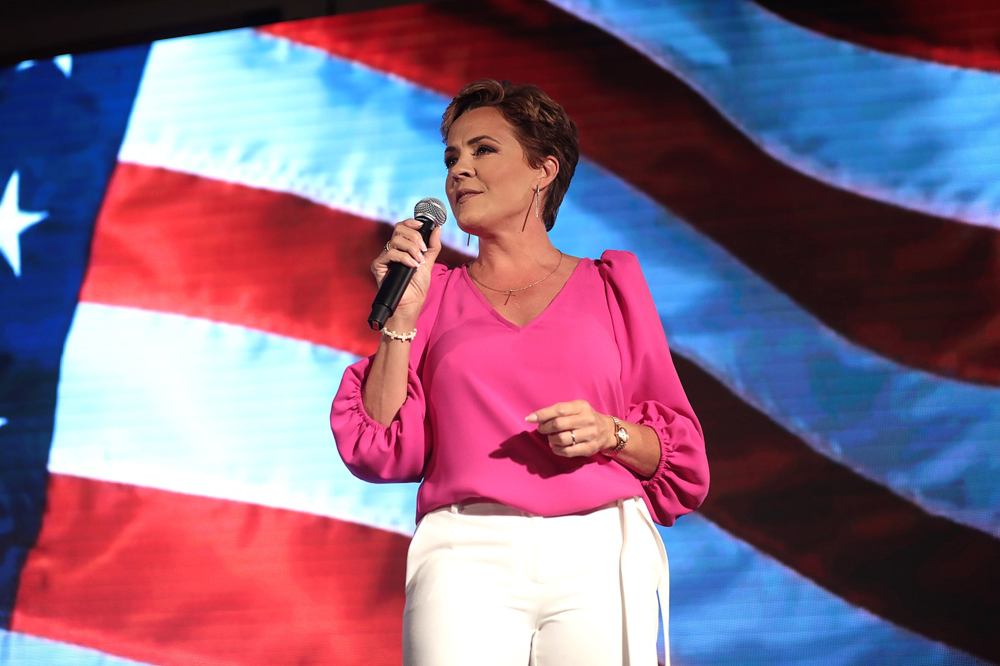

2022 Arizona Gubernatiorial Candidate Kari Lake. Credit: Gage Skidmore and Wikipedia Commons
By Walker LaVancha - 12/15/22 7:21 PM ET
2022 Arizona Gubernatiorial Candidate Kari Lake. Credit: Gage Skidmore and Wikipedia Commons
In the last two years, there have been many claims of election fraud in political races across the nation, from Senate seats and governor’s chairs, all the way up to the 2020 Presidential Election. While these claims have been disproven on numerous occasions by various reputable sources, they continue to arise in many races in the United States, and with the conclusion of the 2022 midterm elections, more rumors have been made. Possibly the most vocal of these comes from Kari Lake, a former TV news anchor turned politician, who ran on the Republican line for Governor of Arizona in 2022. Lake claims that fraudulent handling of the election in, among other places, Maricopa County led to her defeat in the election, and she is now suing state election officials and her opponent, Arizona Secretary of State and Goveror-elect Katie Hobbs, in an effort to overturn the results.
Arizona Secretary of State and Goveror-elect Katie Hobbs. Credit: Ross D. Franklin and the Associated Press However, like her claims of fraud in the 2020 Presidential Election, these claims have no basis in fact or logic, but are rather political plays in an effort to raise doubt and concern about the American voting system.
In her lawsuit against Arizona election officials, Lake’s claims center largely around issues with Maricopa County polling places where people were unable to cast their vote for hours at a time, although Maricopa County officials state that all eligible voters were able to cast their vote on the same day and all legal ballots were accounted for.
In addition, despite Lake’s claims that many Republicans were turned away due to the party’s encouragement of its voters to vote in person on election day, the numbers show that it wasn’t that competitive anyway.
The map above shows the voting results by county in the 2022 Arizona Gubernatorial Election. As is typical with voting patterns in today’s society, the Democrat, Hobbs, sees much more support near cities and urban areas, while the Republican, Lake, gets her votes from rural areas. However, an important factor in this calculation is population. While Lake clearly won more counties than Hobbs, the urban counties Hobbs won have a much higher population.
Here we see the voter turnout in each county, sorted from highest to lowest, as well as the winner of the county shown by color. Clearly, Maricopa County stands out as an incredibly significant county in the voting tally in the state. In fact, the total number of voters in this election in Maricopa County is 50 percent greater than the rest of the state combined.
Here we see the results for Lake and Hobbs by county. Clearly, the battle for Maricopa County was a tight one, with Hobbs winning by about 37,000 votes, Hobbs capturing 51.2% of the vote, and Lake securing 48.8%. However, investigations into the matter by the state of Arizona poke a significant hole in Lake’s logic.
One of the claims made by Lake and her team was that equipment malfunction played a significant role in the skewed data results, as it led to longer wait times for voters and discouraged them from waiting the time it would take for them to vote. But reports from Maricopa County's election officials show that the majority of polling places in the county never reached a wait time greater than 15 minutes, and nearly all of them never had a wait time longer than an hour.
Not to mention, while Lake was heavily banking on in-person voter turnout to win her the election and made it an important point that the technical difficulties prohibited primarily her voters, not many people voted on election day regardless. Only about 15% of votes cast in Maricopa County were made in person on election day. However, nearly 85% of the votes that decided the Arizona gubernatorial election were made before election day even arrived.
Kari Lake giving a speech at a rally in Scottsdale, Arizona. Credit: Gage Skidmore and Wikipedia Commons Finally, many people who claim that they lost their election due to voter fraud tend to blame their loss on a number of ballots that never should have been counted in the first place. However, this doesn’t appear to be a problem in Maricopa County, either. Election officials for the county claim that despite the issues faced on election day, the difference between the number of voters that checked in at polling locations across the county and the number of ballots tallied was only 170 votes, much greater than the 17,177 votes needed for Lake to make up her deficit in defeat.
As claims of election fraud seem to increase year after year, it’s important to disprove false claims in order to protect our democratic values, and, despite her best efforts, Kari Lake’s attempts to overturn the 2022 Arizona gubernatorial election cannot be excluded from such a list of false claims. The evidence is clear that Arizona Secretary of State Katie Hobbs rightfully won the right to call herself Arizona’s Governor, as misinformation and lies fail to defeat honesty within the democratic process.

{kind=link}